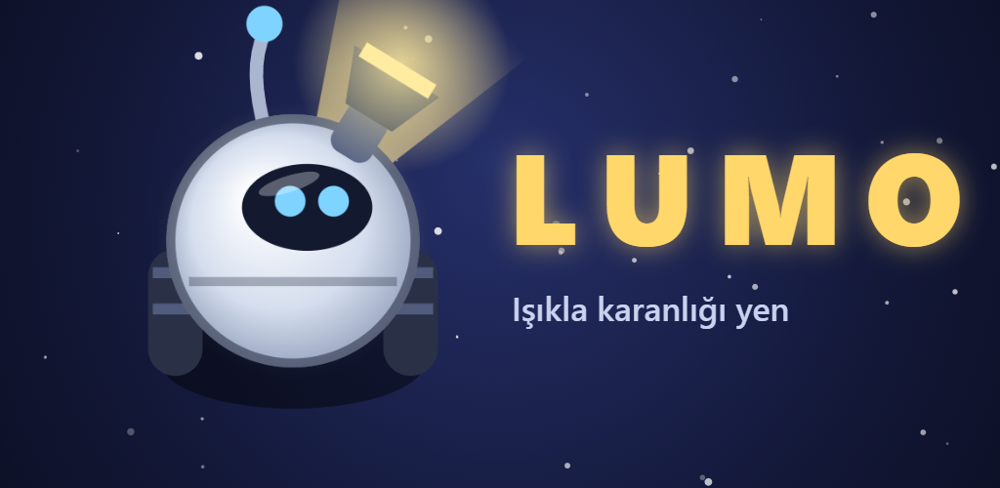
Light vs Shadow · Press kit · Türkçe özet
Darkness has swallowed the orbiting stations. Only one light is left: a tiny robot named Lumo. In Lumo, your weapon is light. Aim your beam to melt shadow creatures, fire a flash to stun every enemy around you, and drop lanterns to light up the room.
Each run takes you through rooms with shadow swarms, light sensors to fill, cores to defend and a boss at the end of each sector. Mirrors bounce your beam, black holes pull you in, fog hides enemies and solar flares light everything up for a moment.
Lumo is made by one person. The only weapon in the game is light: a flashlight beam, grown into a full light system with mirrors, sensors, lanterns and flashes, then into 18 sectors, bosses and a 3-act story told by VEGA, the station's AI.
Click for full size (1080×1920). Raw in-game captures without text are in the second row.
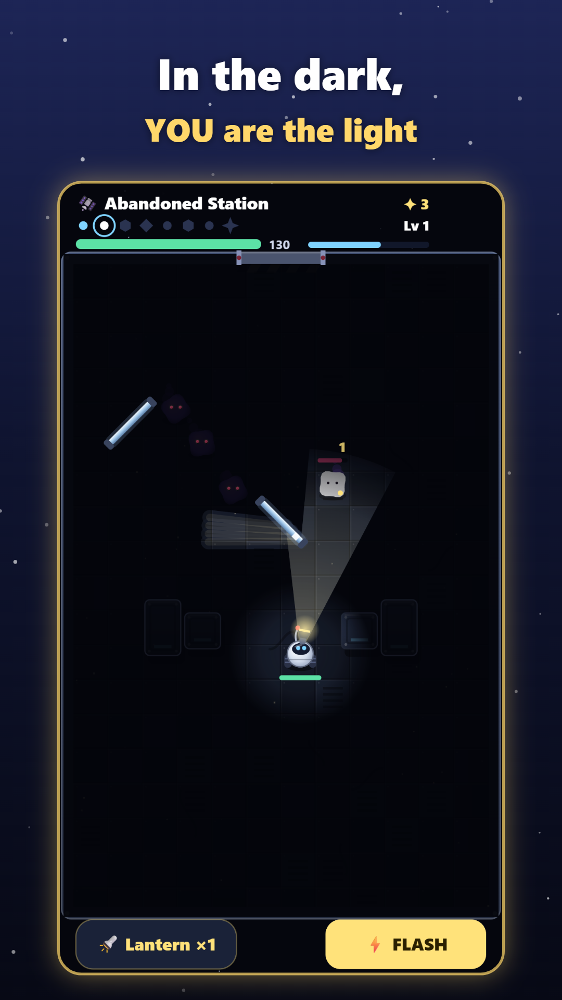
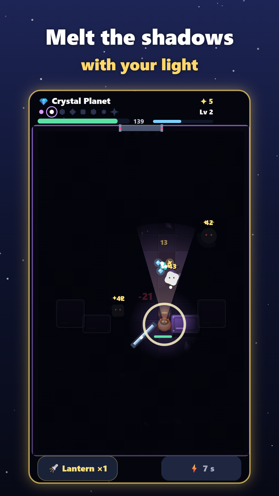
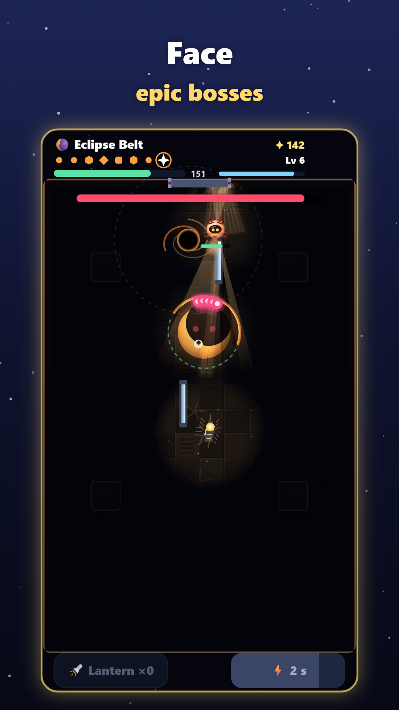
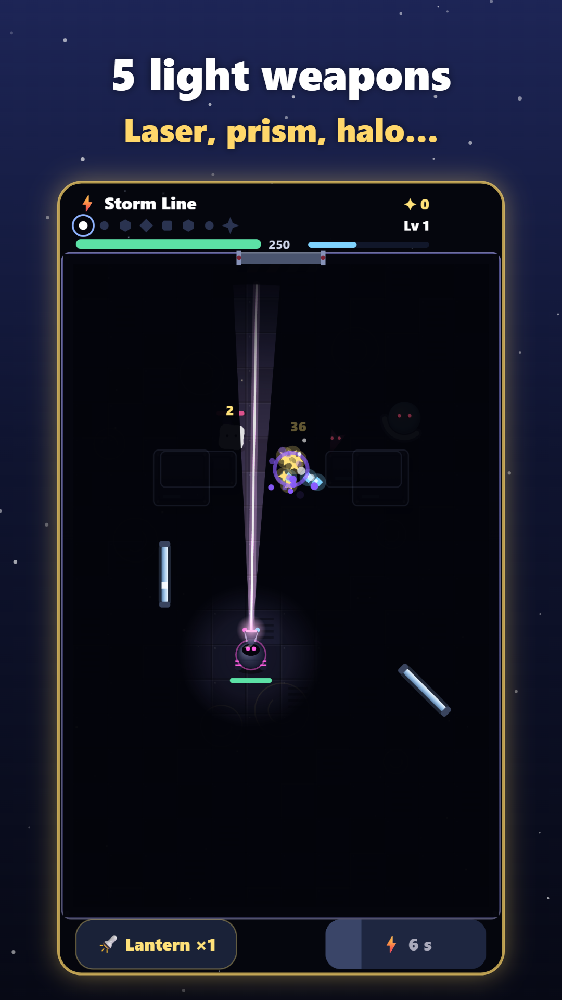
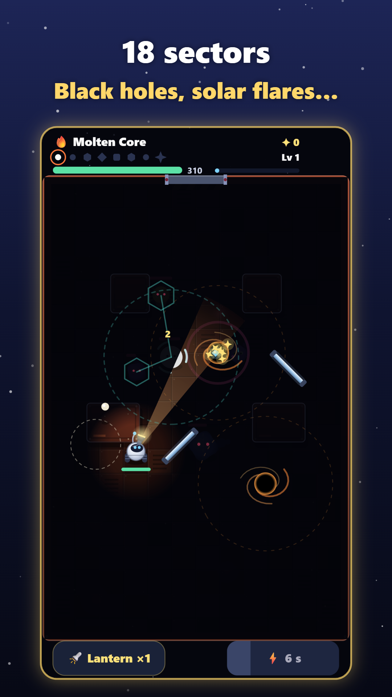
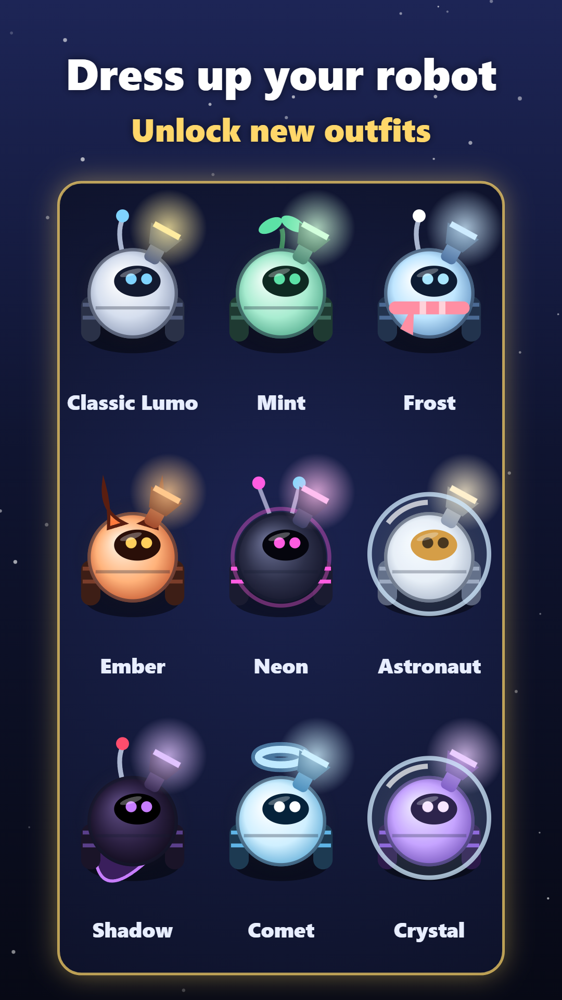
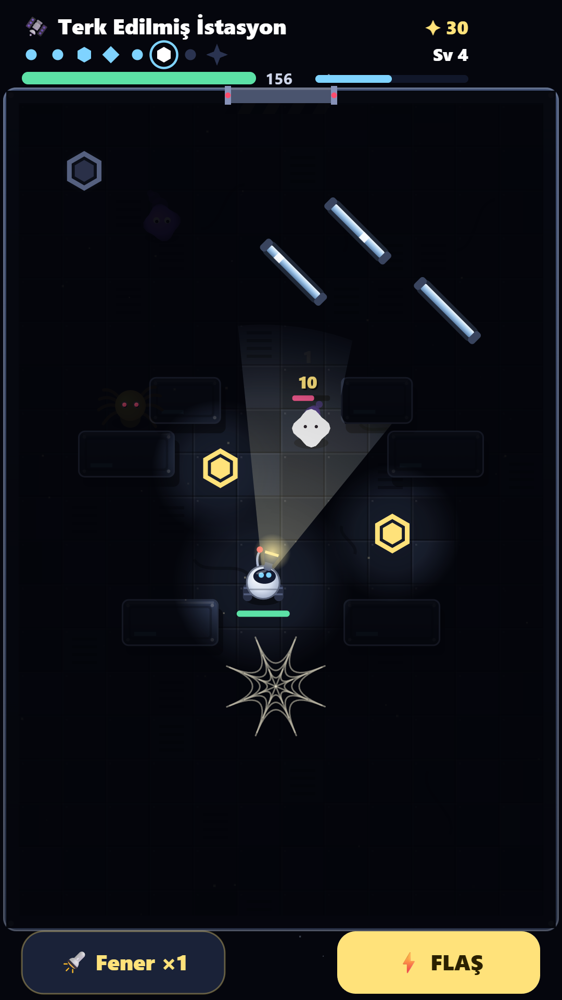
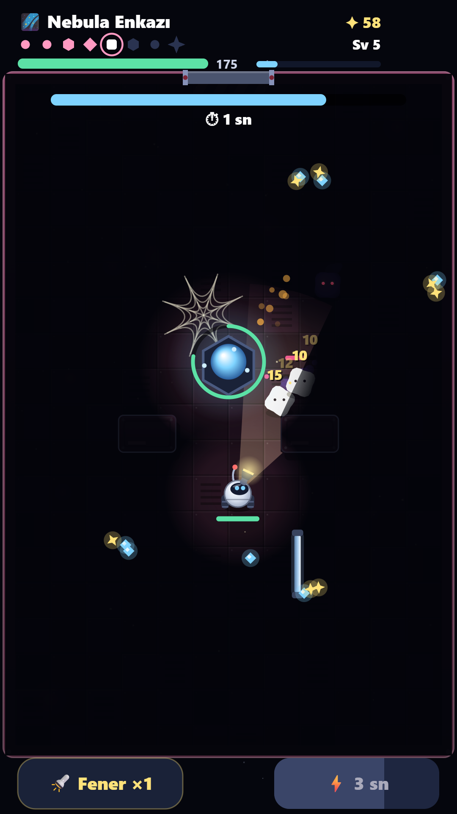
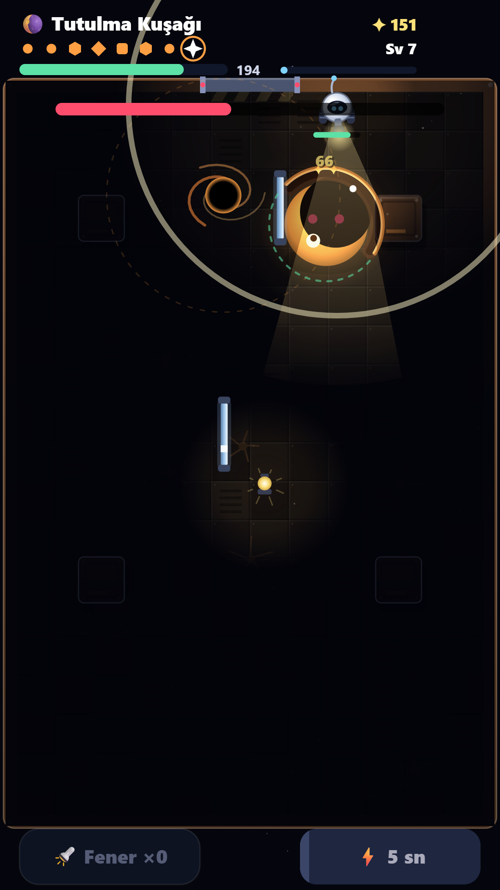
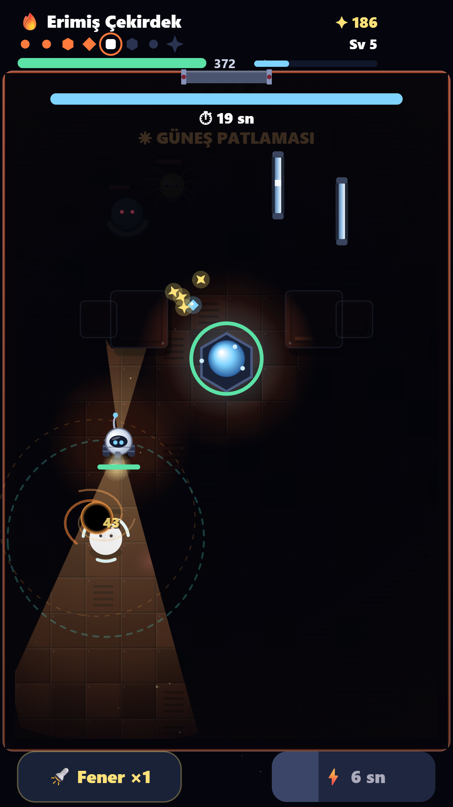
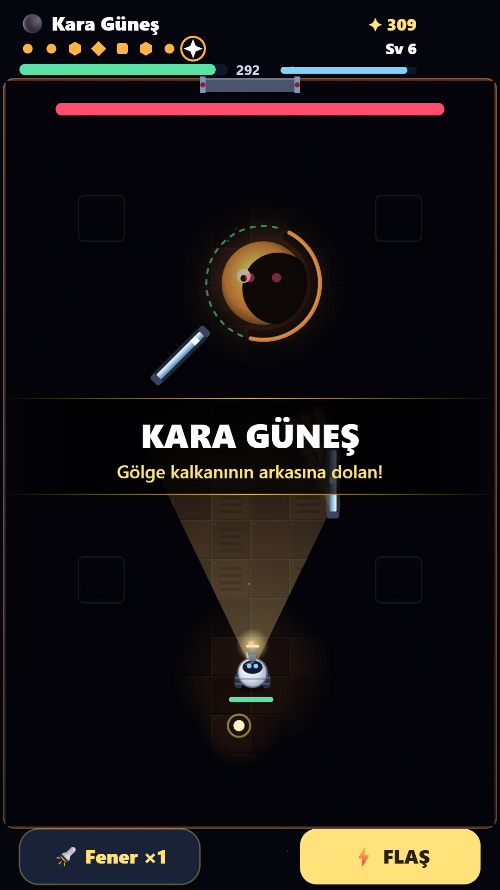
You may use the screenshots, videos and art on this page in articles, videos and streams about Lumo, including monetized videos. Please do not use them to suggest an endorsement or for unrelated products.
Lumo, tek kişinin geliştirdiği, ışıkla gölgelere karşı savaştığın bir aksiyon oyunu. Silahın fenerin: ışığı gölgelere tut, flaşla etrafındakileri sersemlet, fener bırakarak odayı aydınlat. 3 perdede 18 sektör, bosslar, 5 ışık silahı, 13 robot kıyafeti ve sonsuz mod var. Android için ücretsiz, internetsiz oynanır, Türkçe ve İngilizce. Bu sayfadaki görselleri ve videoları Lumo hakkındaki içeriklerinde (para kazanılan videolar dahil) kullanabilirsin. İletişim: batuhankah0@gmail.com